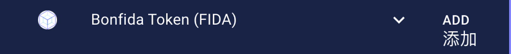
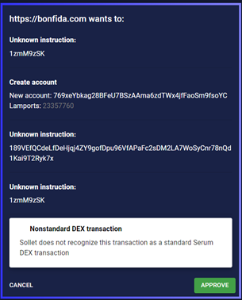

第一步：创立钱包（Bonfida钱包创建）
Sollet钱包请参考https://serum-academy.com/zh/serum-dex/sol-wallet/
-
前往 Bonfida Wallet
- Create new wallet（创建新的钱包，请注意一定要保存助记词，仅仅会在创建钱包时出现一次）或者;
- Restore existing wallet （登录/重置已有的SPL钱包）
-
选择RECEIVE,出现该钱包的SOL接收地址,用来从其他平台接收SOL（如FTX）。Bonfida钱包内添加其他通证 （如USDC，FIDA等）需要消耗0.002039 SOL矿工费。同时请注意在DEX上交易也会消耗SOL，大约$10用于100万次交易。这一次OXY IDO大约需要0.5 SOL
-
请注意这一次OXY IDO，USDC+FIDA入金比率为10：1， 每10个USDC需要1个FIDA
-
选择ADD，并添加FIDA通证到账户中

选择ADD，并添加USDC通证到账户中
第二步: 参与IDO
-
前往 Serum | Bonfida - 官方IDO网址，右上角可以切换语言到中文版本
-
请连接钱包
- 在弹出窗口中选择“CONNECT”允许接通钱包，并确保不要关闭该窗口用于后续每条交易确认（若您已选择auto-approve自动允许也勿关闭此窗口）
- 点击“入金”并且输入想购买OXY的USDC的金额（会自动根据10：1算出需要的FIDA金额）
请勾选免责声明：我已阅读并知晓池子如何运作，操作“申购”以及“赎回”都是基于对池子运作的充分认知。
- 点击“提交”
- 选择“APPROVE”确认交易。网页会在钱包页面弹出确认交易信息窗口，点击“APPROVE”确认交易。

-
USDC和FIDA会被存入OXY池中. 3.16号晚上9:55 至 10:00, 系统会自动将USDC置换成对应份额的OXY通证，用户届时可取回FIDA通证
-
请点击“出金“来提取代币
-
选择“提交”
-
选择“APPROVE”确认交易，池中的通证会被转移到用户钱包里。

- OXY & FIDA 通证现在会出现在用户钱包之中